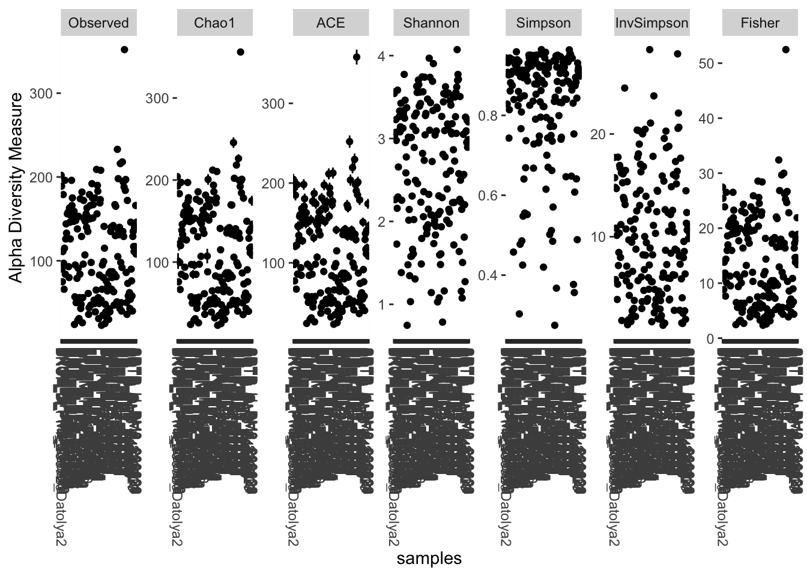
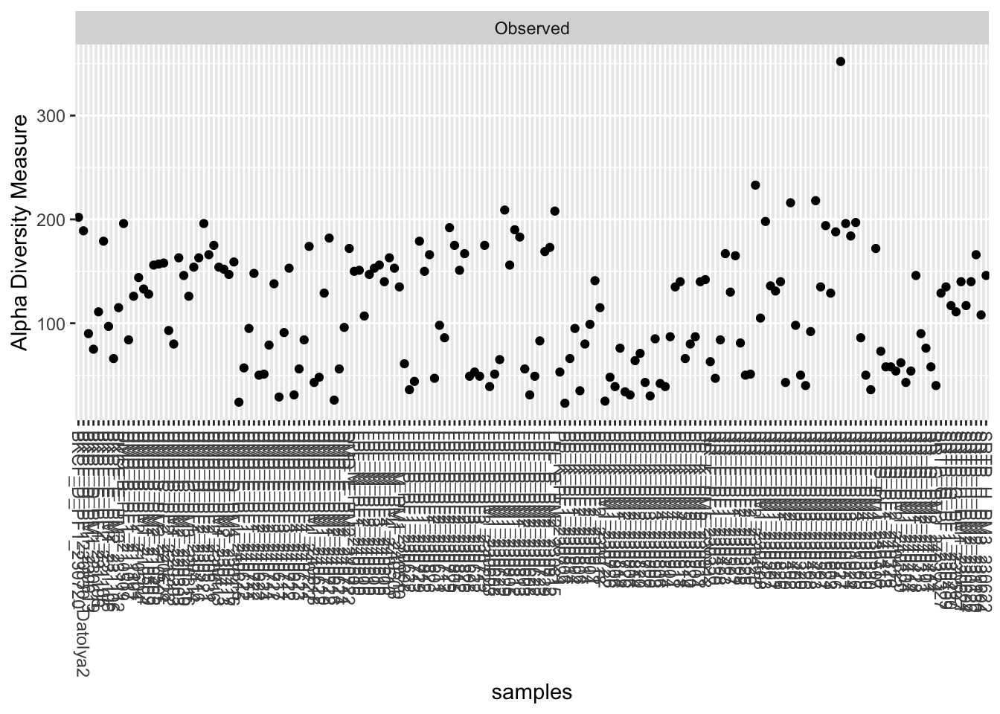
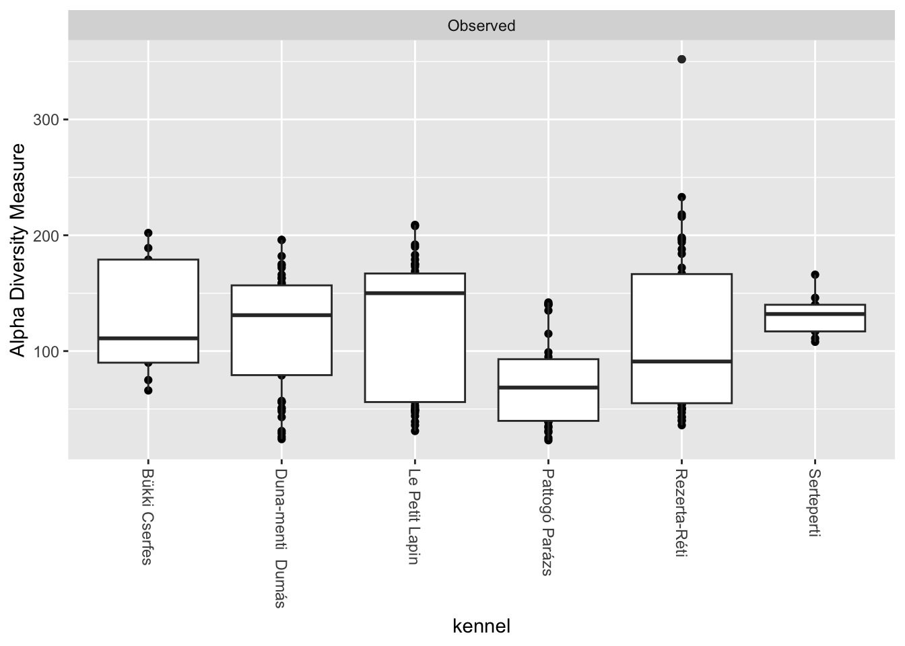
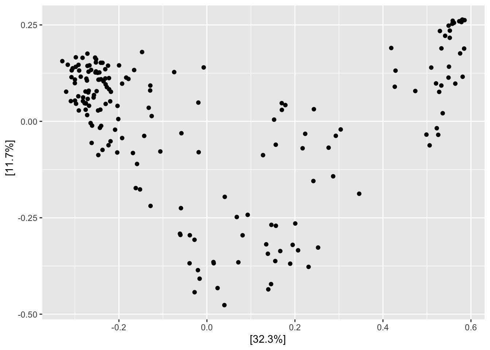
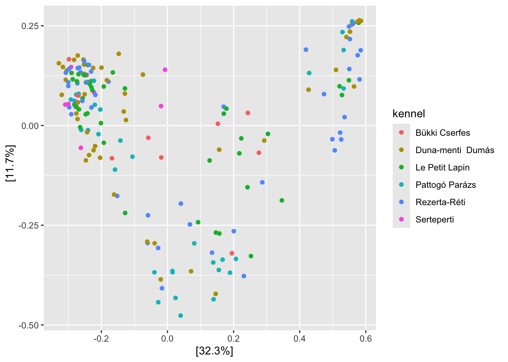
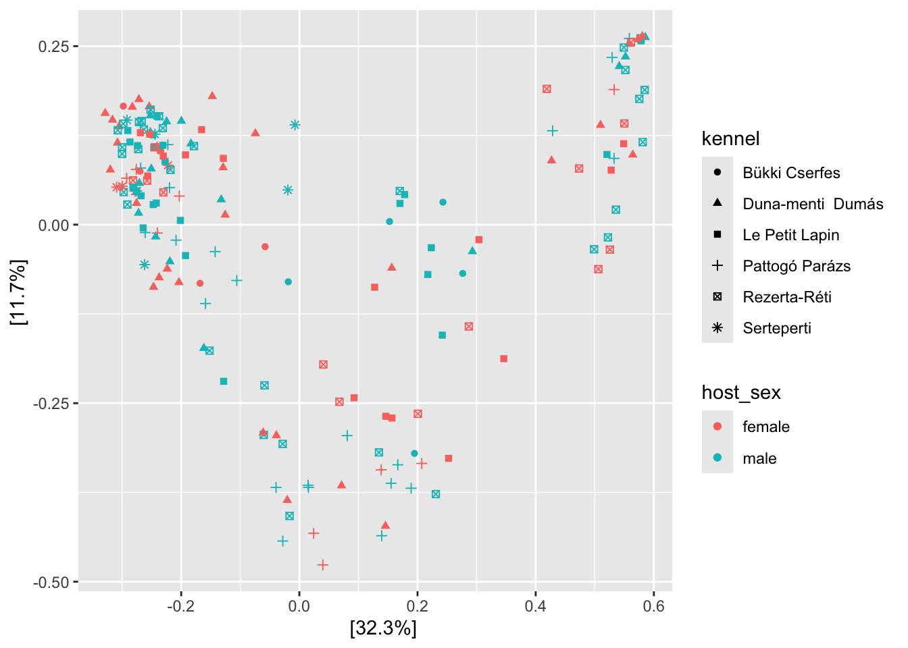
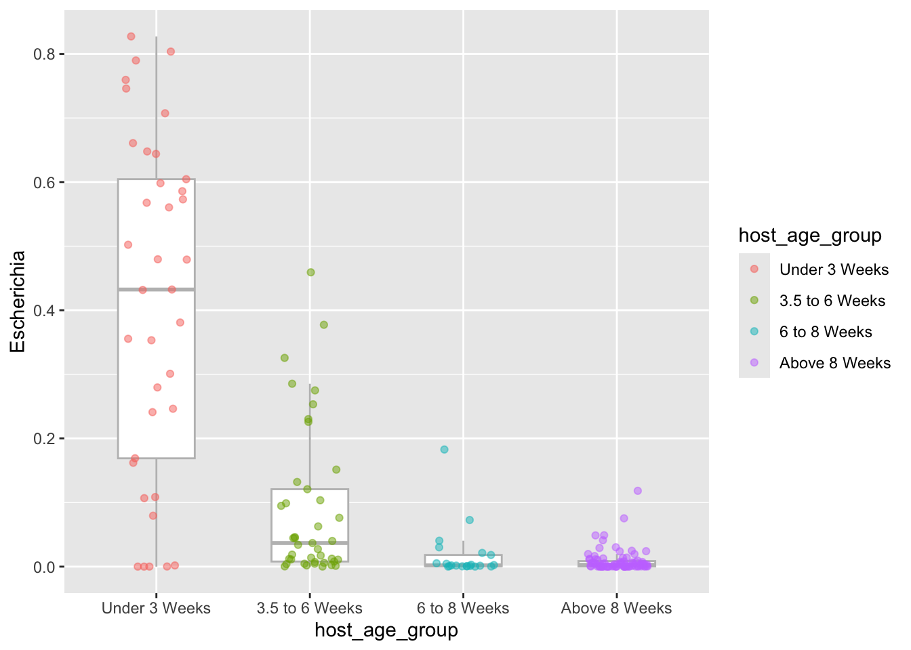
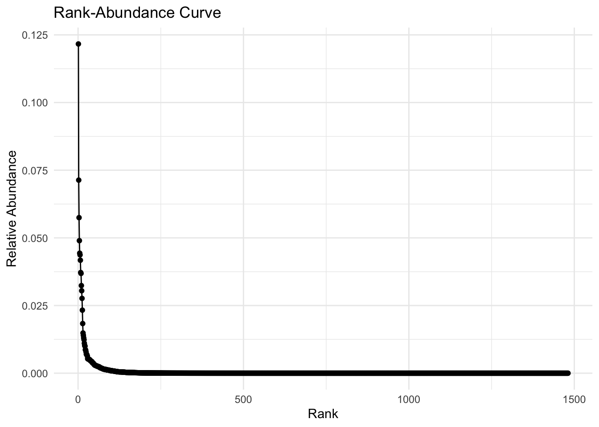

#R Concepts Tutorial - Part 1
#Focus on this tutorial will not be to necessarily understand the basics of R programming, but more to give you the tools to understand the workflow
# You can copy and paste the code found here into your own files and run the code yourself
# 1) By putting a hastag in front of text you can put a "comment"
# R will not interpret this as code
# We can use this as a way to annotate our code with helpful notes
# 2) We will be using a R markdown file to write our code
# It allows us organize our code by keeping sections in different "chunks"
# You can create a new chunk by clicking "Insert a new code chunk" in the top bar (button with a green C with a plus)Tutorial
Overview
The necessary code for the workshop will be hosted here, alongside questions and instructions that build on the code posted
You can copy and paste the code here into your file
You can answer questions as comments in the R chunks
Section 1: R basics Tutorial
# R Concepts - Part 2
#In R, you can save information in an object called a variable. This lets you reuse a value, data frame, or result later without having to type it again.
#Use `<-` to assign something to a variable:
# Save the number 5 in a variable named "number_of_samples"
# You can run this line of code by higlighting the line and selecting "run selected lines" on the "Run" button on the top bar
#Alternatively, you can run all lines in a chunk by selecting "Run Current Chunk" or By pressing the Green button at the top right of the chunk
number_of_samples <- 5
#you can view the number_of_samples variable by viewing it in the "environment" tab or by running just the variable
number_of_samples[1] 5# R concepts Part 3
# R Concepts Tutorial - Part 3: Functions
# A function is a reusable command that performs a specific task.
# Functions usually have:
# 1. A function name
# 2. Parentheses ()
# 3. An input inside the parentheses, called an "argument"
# For example, the c() function combines several values into one vector:
sample_ids <- c("Sample_01", "Sample_02", "Sample_03")
#Quotation marks tell R to treat Sample_01, Sample_02, and Sample_03 as literal text labels. Without quotation marks, R would interpret them as object names and try to find variables with those names.
#Ie the following would give an error
# sample_ids <- c(Sample_01, "Sample_02", "Sample_03")
# Type the variable name and run the line to view its contents:
sample_ids[1] "Sample_01" "Sample_02" "Sample_03"# The length() function counts the number of values in an object:
length(sample_ids)[1] 3# R concepts Part 4
#Certain functions that we may need are not automatically loaded in R
#These functions are found within R "packages" that contain a set of functions
#To load these packages, we can use the "library" function
#For our workshop we will need the following:
library(dplyr) #manipulating dataframes etc.
library(phyloseq) #integrates taxa, abundance, sample data into integrated object for analyses
library(microbiome) #performs functions on phyloseq object to transform/visualize
library(microViz) #helps perform visualizations on phyloseq objects
library(vegan) #ecological distance calculations/stats
library(stringr) #working with character strings# R concepts Part 5
# We can load our phyloseq object and save it as the "phyloseq.dogs" variable by using the readRDS function and using the pathname where the object is found as an argument
#Replace the pathfile to where your file is located
phyloseq.dogs <- readRDS("/Users/anshulsinha/Desktop/microbiome_center/centre-symposium-2026/R_material/dogs_phyloseq.rds")
#If using posit.cloud, run the following:
#phyloseq.dogs <- readRDS("/cloud/project/R_material/dogs_phyloseq.rds")
# Now work through the next section on the website: https://anshulsinha1.github.io/Workshop-2026-Microbiome-Centre/tutorial.html#section-2-characterizing-the-dataset-and-phyloseq-object
# Copy and paste the code into new chunks and run yourself
# Answer the questions listed
# We will reconvene after each section to go over the answers Section 2: Characterizing the Dataset and Phyloseq Object
Now that we have our phyloseq object, let’s survey what we have here
#run the phyloseq object to get basic characteristics of the dataset
phyloseq.dogs#you can run the phyloseq object it's chunk to return some basic characteristics of the dataset
phyloseq.dogsHow many unique species are in the dataset?
How many samples?
How many metadata categories do we have?
Let’s look at each component of the phyloseq object
#1) The OTU_table function can acess the "feature table"
# We can save the feature table as a data frame (a table-like data structure)
# Note: here we are using a function (otu_table) within a function (as.data.frame)
phyloseq.dogs.otu.table <- as.data.frame(otu_table(phyloseq.dogs))
#remember, you can view the variables by either running the variable itself as a line of code, or looking for it in the environment panel Any immediate observations here?
#2) The tax_table function allows us to access the "taxonomy table"
phyloseq.dogs.tax.table <- as.data.frame(tax_table(phyloseq.dogs))
# Each row of the tax.table is a unique species that is found at least once in the dataset
# You can inspect how the unique phyla by doing the following
# The "$" operator accesses a column of the data.frame
unique(phyloseq.dogs.tax.table$phylum)
#you can add the "length" function to give the number of unique phyla
length(unique(phyloseq.dogs.tax.table$phylum))
length(unique(phyloseq.dogs.tax.table$family))
length(unique(phyloseq.dogs.tax.table$genus))How many unique family are there?
genera?
#3) The sample_data function allows us to access the "metadata"
phyloseq.dogs.metadata <- as.data.frame(sample_data(phyloseq.dogs))
#Go through the metadata columns to see what sorts of information we have on the samples
# Remember, this dataset contains dogs sampled longitudinally
#Start to think about what might categories might be interesting to test their associations with the microbiome
length(unique(phyloseq.dogs.metadata$host_subject_id)) # 88
length(unique(phyloseq.dogs.metadata$host_diet_group)) #8How many unique dogs do we have? (This info is found in the “host_subject_id” category)
diet groups?
#We can always subset our phyloseq object to work with a subset of samples if we need to
# We can do this by using the subset_samples function a given metadata category
# Let's get a phyloseq object of just puppy samples (indicated by the "host_life_stage column)
phyloseq.dogs.puppies <- subset_samples(phyloseq.dogs, host_life_stage == "puppy")how many puppy samples are there?
Try subsetting the phyloseq object on a different metadata category
Confirm this worked by checking the metadata file from the phyloseq object
Section 3: Visualization of Microbiome Data using Bar Plots
Now that we have a sense of the samples we are working with, lets try to visualize some data
A good way to get a first overview of microbiome data is through with simple bar plots. These aren’t perfect, but they can give us a nice first impression of what to expect
We can make a simple bar plot using the Microviz comp_barplot command
This command will plot (per sample) the relative abundance of bacteria at different taxonomic levels
# We will be using a command called "comp_barplot" which takes our phyloseq object and creates relative abundance plots
#step 1) Use the tax_fix command to make the taxonomy appropriate for the comp_barplot function
#Lets do this using our phyloseq object that we originally made
fixed.physeq <- tax_fix(phyloseq.dogs)
#Step 2) We can use the comp_barplot to create a barplot
# It takes a minimum of two arguments, each separated by a comma 1) The "fixed" phyloseq object and 2) the taxonomic rank at which to create the plots
#we also added the "label = NULL" argument to not plot sample names to keep our plot cleaner
comp_barplot(fixed.physeq, tax_level = "phylum", label = NULL)
#remember that we can run the following to look at the documentation of the function
?comp_barplot
#Not all these will be relevant, but some, like n_taxa can control how many distinct taxa we plot
#comp_barplot(fixed.physeq, tax_level = "phylum", n_taxa = 12, label = NULL) What are the most abundant phyla in the dataset?
Go through different levels of taxonomy, and report the most abundant members of the community.
What levels of variation do you see between samples?
Does this variation change as the levels of taxonomy become more resolute?
#It is probably useful to try to see how our taxa composition differs by different metadata categories
#We can use the "group_by" argument to split our plots by a given category
#Remember, we can look at our metadata table by doing the following:
sample_data(fixed.physeq)
#For instance to look at how composition differs between puppies and adults at the family level, we can do the following
comp_barplot(fixed.physeq, tax_level = "family", n_taxa = 12, label = NULL, group_by = "host_life_stage") 

Are there obvious differences between the composition of the adult and puppies?
If so, describe some general trends
Does one group have more variation than the other?
#Let's focus just on the puppies
#we can use the subsetted phyloseq object that we created earlier
phyloseq.dogs.puppies <- subset_samples(phyloseq.dogs, host_life_stage == "puppy")
#Reminder: we have to run tax_fix on this first
fixed.physeq.puppy <- tax_fix(phyloseq.dogs.puppies)
#Then, we can run comp_barplot like we did earlier and test the effect of different metadata categories
#Remember, you can run the following to look at the metadata
phyloseq.dogs.metadata.puppies <- as.data.frame(sample_data(phyloseq.dogs.puppies))Are there metadata categories that seem to influence puppy microbiome composition more than others? Focus on the categories “host_sex”, “host_age_group”, and “host_diet_group” for now
Try to identify some species that are associated with a given group
Compare the effects of the host_diet_group and host_age_group. Is there anything interesting that you notice?
Since this is a longitudinal dataset, it may be interesting to follow the composition of a single dog over time. See if you can do this with the dog id “DMD_E_Rozsaszin”. Note: you’ll need to use the “host_subject_id” metadata column
Optional: Compare the microbiome composition over time of the “DMD_E_Rozsaszin” dog with the “PP_K_Lila”. What is similar, what is different
Optional: Go through sections 3.1 and 3.2
Section 4: Normalizing Sequencing Depth using Rarefaction
While our bar plots have given us some nice qualitative measures of the community composition, can we assess changes in a more quantitative way?
We can calculate changes in microbial diversity (the number of taxa present and how they are distributed)
As covered in the lectures, we can assess within-sample diversity (alpha diversity) and between-sample diversity (beta-diversity). This involves calculating different diversity metrics and calculating ecological distance
Before we do this, there is an important consideration: library size normalization!
During a sequencing run, different samples will inevitably have different numbers of reads, which means we have to normalize the read depth of our samples to make accurate comparisons
For the bar plots, we’ve calculated relative abundance, which essentially “normalized” the samples (reads of taxa/total reads in the sample) to make them comparable. Using relative abundance for normalization in diversity calculations is not generally advised. There is a lot of debate and controversy around what normalization approaches are the best.
In reality, no single method is perfect. But we will be using a method called rarefaction. It’s relatively simple and a recently published paper by Schloss put forward that it is the best method for normalizing amplicon sequencing data
Basically, rarefaction involves the random subsampling of reads in each sample to the SAME depth
To illustrate the concept of rarefaction lets look at the distribution of reads in our samples
#Above, we used total sum scaling to look at the proportions of bacterial taxa
#As a technical artifact of sequencing, we may have different numbers of reads between samples
#We can look at the number of reads in each sample by using the "sample_sums" function on our phyloseq object
sample_sums(phyloseq.dogs.puppies)
#we can find the min and max number of reads in our phyloseq object by doing the following
min(sample_sums(phyloseq.dogs.puppies))
max(sample_sums(phyloseq.dogs.puppies))#we can visualize this by saving the sample_sums as a dataframe and then plotting as a histogram
#save sample_sums as the variable "lib_sums"
lib_sizes <- sample_sums(phyloseq.dogs.puppies)
#can visualize lib_sizes using the "hist" function
hist(lib_sizes,breaks = 50)
Assess the variability of sequencing depth in the dataset
Now, let’s build a rarefaction curve to see if we’ve sequenced enough
#First let's get a matrix from our phyloseq object
#We are using "t" to transpose the rows and columns (rarecurve takes the taxa and abundance in opposite orientation to phyloseq)
matrix.phyloseq.dogs.puppies <- as(t(otu_table(phyloseq.dogs.puppies)), "matrix")
## Calculate row sums (sequencing depth of each sample)
row.sums.puppies <- rowSums(matrix.phyloseq.dogs.puppies)
#Our curve might be messy if we plot ALL of our samples
# Lets order rows by row sums and take the 50 rows with the lowest sums
matrix.phyloseq.dogs.puppies.low50 <-
matrix.phyloseq.dogs.puppies[order(row.sums.puppies)[1:50], ]
?rarecurve
#now we have a matrix that we can put into the rarecurve function!
#step = 1000 means that the function calculates species richness every 1000 sequences until the total number of species for that sample is reached
rarecurve(matrix.phyloseq.dogs.puppies.low50, step = 1000, label = FALSE)Warning in rarecurve(matrix.phyloseq.dogs.puppies.low50, step = 1000, label =
FALSE): most observed count data have counts 1, but smallest count is 10
Are all samples plotted sequenced to sufficient depth?
What would be a good depth to rarefy at?
#Our lowest sequencing depth is:
min(sample_sums(phyloseq.dogs.puppies)) #42984[1] 42984We can go ahead an rarefy at the lowest sequencing depth. This will ensure all samples can be rarefied, and we know that all samples at this depth are sequenced sufficiently
#We can now rarefy our phyloseq object by using the "rarefy_even_depth" function, which takes the phyloseq object as one argument and the sample.size (depth) that we want to subsample at (which we can set to the minimum depth across all samples)
rarefied.phyloseq.puppies <- rarefy_even_depth(phyloseq.dogs.puppies, sample.size = min(sample_sums(phyloseq.dogs.puppies)))
#physloseq object as input, sample.size = the depth to subsample at (in this case the minimum # of reads in samples on our PS object)Section 5: Characterizing Within-Sample Diversity
#characterizing alpha diversity is quite easy with the phyloseq package
#the estimate_richness function will give a dataframe of samples as rows and various measures of alpha diversity for each sample as columns
#remember that some alpha diversity measures like Shannon and Simpons combine both eveness and richness
#Remember that we will want to use our rarefied phyloseq object
estimate_richness(rarefied.phyloseq.puppies)Take a look at some of the metrics that the function generates.
What does “Observed” refer to here?
#If we want to visualize alpha diversity, we can use the plot_richness function, which works in a similar fashion
plot_richness(rarefied.phyloseq.puppies)
#This is pretty non-sensical, as it is trying to fit all of the samples in a single plot across 7 different alpha diversity measures
#Let's narrow this down to just look at richness
#The measures argument tells us which alpha diversity measurements we want to plot
plot_richness(rarefied.phyloseq.puppies, measures=c("Observed"))
#Still not super informative
#Let's define our x-axis to a specific metadata category
#Let's see if Kennel dictates richness at all
#We can do a boxplot to better visualize the spread
plot_richness(rarefied.phyloseq.puppies, x="kennel", measures=c("Observed")) +
geom_boxplot() 
In the earlier section, we saw that host age group had a strong effect on microbiome composition
See how richness, Shannon, and Simpson diversity are impacted by host age
Does these trends of alpha diversity on age make sense ?
Do the trends in alpha diversity differ depending on the metric used?
We can also plot age as a continuous variable rather than a categorial variable (host_age_group). We can do this by using the “host_age_weeks” column instead. See at what age does richness plateau in the puppies. Remove the “+ geom_boxplot” for better visualization
Optional: In the paper that describes this dataset, they find that the physiological state of the mother (Ie- pregnancy stage and lactation) has an impact on alpha diversity. Can you determine at which stages do mothers have a reduction in alpha diversity (see below for a headstart)?
#Since we no longer want to work with just the puppies,we will need to go back to the original phyloseq object
#The physiological state of the mother is indicated by the column: "mother_physiological_state_category"
#In the metadata, samples that don't apply to the mothers' physiological state (Ie- puppy samples) are labelled "Not Applicable"
#We can use subset_samples and get columns that ARE NOT "Not Applicable". The "!" operator does this
phyloseq.moms <- subset_samples(phyloseq.dogs, mother_physiological_state_category != "Not Applicable")Section 6: Beta-Diversity
One of the best ways to assess changes between microbial communities is by measuring between sample ecological distance
There are several distance metrics one can use to assess differences. Regardless, these metrics generally work by measuring the richness and/or the eveness of the community.
While others are used, generally there are 4 main distance metrics used in microbial ecology analyses: 1) Bray-Curtis (richness + eveness), 2) Weighted Unifrac distance (richness + eveness + phylogenetic relatedness), 3) Jaccard distance (richness), 4) Unweighted Unifrac distance (richness + phylogenetic relatedness).
We don’t have the time to go into how to create a phylogenetic tree today, so we will focus on Bray-Curtis and Jaccard distance
Lets start by calculating distance using the distance function in phyloseq
You can list all available distance metrics that this function is compatible using:
distanceMethodList
#And you can create a matrix of distance between each sample using the distance function
#The distance function takes two arguments: 1) THe rarefied phyloseq object and 2) The method of distance we want to calcualte
#We will do this on our rarefied.puppies phyloseq object and calculate bray distance
bray.distance.puppies <- phyloseq::distance(rarefied.phyloseq.puppies, method = "bray")
#If we wanted to calculate jaccard distance we could do the following
jaccard.distance.puppies <- phyloseq::distance(rarefied.phyloseq.puppies, method = "jaccard")Take a look at both of these matrices
This returns a matrix with the distances between samples shown. For Bray-Curtis distance, all values will be between 0 and 1
There are plenty of things that one can do with a distance matrix, but the most common is to perform an ordination. This process will essentially take our distance matrix and represent our samples in a two-dimensional space, where samples with less distance between each other are closer together and samples with greater distances are further apart.
There are lots of different ordination methods, but we’ll mostly focus on principal coordinate analysis (PCoA) plots. These 1) take your distance matrix, 2) Performs a “decomposition”, which projects the data into 2-D space while trying to best represent the distances between samples. The mathematical details are not important for our purposes, but the important thing to know is that we’ll end up with two axes that represent variance in the data. The variance explained is proportional to the distances between samples.
This will make sense if we perform an ordination!
We can calculate the distance and plot an ordination in two steps:
Let’s do this on bray distance first
#Bray Ordination
#ordinate function takes 1) The rarefied phyloseq object 2) The method of ordination we want to perform (in this case PCoA) 3) The distance matrix
pcoa.ord.bray.puppies <- phyloseq::ordinate(rarefied.phyloseq.puppies, method ="PCoA", distance = bray.distance.puppies)
#now we can plot this using the plot_ordination function
plot_ordination(rarefied.phyloseq.puppies, pcoa.ord.bray.puppies)
#And we can colour our points by using the colour argument (ie- by kennel )
plot_ordination(rarefied.phyloseq.puppies, pcoa.ord.bray.puppies, color = "kennel")
#We can also see how multiple categories are distributed by adding the "shape" argument
plot_ordination(rarefied.phyloseq.puppies, pcoa.ord.bray.puppies, color = "host_sex", shape = "kennel")
We have a PCoA plot now! Imagine two points on the PCoA plot above. In case one, these two points are distributed vertically and in case 2, the points are distributed horizontally (equidistant to case 1). In which case is there greater distance between points?
Try colouring the points of the PCoA by host age group. What do you see?
Try making a PCoA plot using jaccard distance instead of bray and compare host age group again. Does this agree with the PCoA you made using bray?
You’ve been asked by the canine diet manufacturer that provides the diet in this study to test whether their “HPLC-puppy” and “MPHC-puppy” diets have different impacts on the gut microbiome of puppies. Using PCoAs show whether there are differences between these diets (see below for a headstart)? Are any potential differences dependent on other metadata categories
#Since all we care about is the HPLC and MPHC diets, we can just subset for these # The "|" is an "or" operator, meaning we are only taking samples that belong to either the HPLC or MPHC groups phyloseq.dogs.puppies.HP.MP <- subset_samples(phyloseq.dogs, host_diet_group == "HPLC-puppy" | host_diet_group == "MPHC-puppy") #remeber to rarefy this!!
Section 7: Interactive Ordination Plots
Microviz has a nice interactive tool to make and explore PCoA plots. Let’s explore that a little
#You can run the following using the ord_explore function and use the rarefied phyloseq as an argument
ord_explore(rarefied.phyloseq.puppies)
# A window should pop up in your browser that will eventually give you options to "edit ordination".
#Select the following:
#Taxonomic Rank: Species
#Tax Transformation: No transformation
# Distance: Bray
#Ordination: PCoA
#On left hand side: Select "host_age_group" under "colour"
#You can then select the "lasso" button at the top right to select a group of points. This will populate those points with a bar plot beneath
#Play around with the settings: You can select the gear (settings) to change the distance matrix, the taxonomy rank, etc.
#See what taxa are associated with what groups of samplesMake sure to press the stop button at the top of your chunk when you are done to stop it from running
Section 8: Putting it All Together
In the publication that uses this dataset, they have a small subset of data, where puppies from two litters from the same dam, one born vaginally, and one by cesarean section were compared. They were diet and age-matched.
Using what we’ve learned so far, use bar plots, alpha, and beta-diversity approaches to compare the puppies born vaginally and by cesearean section.
Do all these methods suggest that the groups are different from each other to some degree?
#To access these samples, we need to get a phyloseq object of samples from this birth study
phyloseq.birth.study <- subset_samples(phyloseq.dogs, birthstudy == "yes")
#from here, you can use the puppies_mode_of_delivery column for comparisonOptional Section 3.1: Plotting individual taxa
#Now that we've identified some taxa of interest, we can try plotting them individually to get a more clear look at their dynamics
#Let's plot how E. coli changes over age group
#We can use the tax_transform function to change our phyloseq object and normalize it using relative abundance and get our phyloseq object at the species level
#it takes the phyloseq object as an argument, the "compositional" string to indicate we are transforming to get a relative abundance phyloseq object, and rank to do this at the genus level
phyloseq.dogs.puppies.relab.genus <- tax_transform(fixed.physeq.puppy, "compositional", rank = "genus") #
# lets turn this back into a phyloseq object using the ps_get function
phyloseq.dogs.puppies.relab.genus.ps <- ps_get(phyloseq.dogs.puppies.relab.genus) #returns a phyloseq object
#now we can add the relative abundance of Escherichia to the sample data as a column using ps_otu2samdat
phyloseq.dogs.puppies.relab.genus.ps.escherichia <- ps_otu2samdat(phyloseq.dogs.puppies.relab.genus.ps, "Escherichia")
#now we can make a table with its abundance
phyloseq.dogs.puppies.relab.genus.ps.escherichia.table <- samdat_tbl(phyloseq.dogs.puppies.relab.genus.ps.escherichia)
#You can see there is a column called Escherichia with the relative abundance of Escherichia in every sample
#Now we can use ggplot2 to plot the abundance of this species
#ggplot2 takes our table as an argument, and then asks for our x and y-axes in the aes function
# we can specify we want this to be a boxplot using geom_boxplot
# we can specify that we want to add individual points with geom jitter
ggplot(phyloseq.dogs.puppies.relab.genus.ps.escherichia.table
, aes(x = host_age_group, y = Escherichia, colour = host_age_group)) +
geom_boxplot(width = 0.5, colour = "grey", outlier.shape = NA) +
geom_jitter(width = 0.2, alpha = 0.5) 
Give this a try with another bacterial genus and or metadata category
Optional Section 3.2: Plotting ranked abundance
One thing that could be useful is to see a ranked distribution of the species in your dataset
This will give you an idea of what species are most dominant across your samples
To get a dataframe that gives us a rank distribution of species by abundance we can do the following
# Step 1: Transform the phyloseq object to get relative abundance info for each species using the "transform_sample_counts" function
#Now we have a phyloseq object that has relative abundance counts instead of "raw counts"
# Step 1: Convert each sample to relative abundance
physeq_rel <- transform_sample_counts(
phyloseq.dogs,
function(x) x / sum(x)
)
# Step 2: Sum relative abundance across samples for each species
taxa_abundance <- taxa_sums(physeq_rel)
# Step 3: Convert the summed abundance to mean relative abundance
mean_rel_abundance <- taxa_abundance / nsamples(physeq_rel)
# Step 4: Create a data frame
abundance_df <- data.frame(
species = names(mean_rel_abundance),
Mean_Relative_Abundance = mean_rel_abundance,
row.names = NULL
)
# Step 5: Merge with taxonomy
# Extract the taxonomy table from the phyloseq object
tax_df <- as.data.frame(tax_table(phyloseq.dogs))
merged_df_abundance <- merge(
abundance_df,
tax_df,
by.x = "species",
by.y = "row.names",
all.x = TRUE
)
# Step 6: Rank by mean relative abundance
merged_df_abundance <- merged_df_abundance[
order(-merged_df_abundance$Mean_Relative_Abundance),
]
merged_df_abundance$Rank <- seq_len(nrow(merged_df_abundance))What are the most abundant species in the dataset?
Let’s make a Whittaker plot, which plots the abundance of species in the dataset ordered by rank. These can give us an idea of the abundance distribution and how many species are dominant vs. low abundance. We can plot our distribution by doing the following:
ggplot(merged_df_abundance, aes(x = Rank, y = Mean_Relative_Abundance)) +
geom_line() +
geom_point() +
labs(
title = "Rank-Abundance Curve",
x = "Rank",
y = "Relative Abundance"
) +
theme_minimal()
What does this distribution tell us?
We can also do this with species prevalence: In what proportion of samples is a species found
# Number of samples in which each species is detected
prevalence <- apply(
X = otu_table(phyloseq.dogs),
MARGIN = ifelse(taxa_are_rows(phyloseq.dogs), 1, 2),
FUN = function(x) sum(x > 0)
)
# Convert counts to the proportion of samples in which each species is detected
prevalence_prop <- prevalence / nsamples(phyloseq.dogs)
# Convert to a data frame
prevalence_df <- data.frame(
species = names(prevalence),
Prevalence_n = prevalence,
Prevalence_prop = prevalence_prop,
Prevalence_percent = prevalence_prop * 100,
row.names = NULL
)
merged_df_prevalence <- merge(
prevalence_df,
tax_df,
by.x = "species",
by.y = "row.names",
all.x = TRUE
)
# Rank from most to least prevalent
merged_df_prevalence <- merged_df_prevalence[
order(-merged_df_prevalence$Prevalence_prop),
]
merged_df_prevalence$Prevalence_Rank <- seq_len(
nrow(merged_df_prevalence)
)Take a look at the species that are most prevalent
Are they the same ones that are abundant?
Optional Section 9. 1: Statistical Analyses for Beta-Diversity
Our focus so far has been on visualization and qualitative observations. How do we actually statistically test differences in microbiome composition between groups?
PERMANOVA tests whether microbiome composition differs among groups using a distance matrix, such as Bray–Curtis dissimilarity. PERMANOVA asks whether the metadata group labels (ie diet, age group, birth mode) are associated with differences in the overall microbiome composition that are larger than you would see if the labels were assigned randomly.
Imagine coloured labels placed on points in a PCoA plot:
If red, green, blue, and purple labels are scattered randomly throughout the plot, shuffling their labels should not change the degree of apparent group separation much.
If samples of the same colour cluster or occupy different areas of the ordination, the true labels produce greater group-associated structure than random shuffles.
A simplification of this idea is that PERMANOVA essentially tests whether the variation between groups is larger than the variation within groups
- Let’s test this using the birth study as an example
#Step 1: Create Distance Matrix From Rarefied Phyloseq Object
rarefied.phyloseq.birth.study <- rarefy_even_depth(phyloseq.birth.study, sample.size = min(sample_sums(phyloseq.birth.study)))You set `rngseed` to FALSE. Make sure you've set & recorded
the random seed of your session for reproducibility.
See `?set.seed`...1206OTUs were removed because they are no longer
present in any sample after random subsampling...bray.distance.puppies.birthstudy <- phyloseq::distance(rarefied.phyloseq.birth.study, method = "bray")
#Step 2: Extract Metadata From the Phyloseq Object
meta.birth <- data.frame(sample_data(rarefied.phyloseq.birth.study))
#Step 3: Run the adonis2 function, which takes your distance matrix, your variable of interest, and the metadata as input
adonis2(bray.distance.puppies.birthstudy ~ puppies_mode_of_delivery, data = meta.birth)Permutation test for adonis under reduced model
Permutation: free
Number of permutations: 999
adonis2(formula = bray.distance.puppies.birthstudy ~ puppies_mode_of_delivery, data = meta.birth)
Df SumOfSqs R2 F Pr(>F)
Model 1 0.49286 0.31173 6.7939 0.001 ***
Residual 15 1.08818 0.68827
Total 16 1.58104 1.00000
---
Signif. codes: 0 '***' 0.001 '**' 0.01 '*' 0.05 '.' 0.1 ' ' 1Here, we can see the output of the adonis test. The two important columns for us are the p-value column, which tells us that the delivery mode does have a significant effect on microbiome composition! The R2 column tells us what proportion of total variance of the data is explained by a certain factor (delivery mode) in this case.
See if the sex of the puppies has a significant effect on composition. Is the effect larger or smaller than delivery mode?
Note that if we technically wanted to properly test the effect of things like diet, age_group on the composition of the puppies, we would need to account for repeated sampling. This is outside the scope of this workshop, but if you’re interested in this, there is some useful discussion here on this topic: https://uw.pressbooks.pub/appliedmultivariatestatistics/chapter/restricting-permutations/
For the meantime, using the “phyloseq.puppies” phyloseq object, and using adonis2, get a rough sense of which factors impact beta-diversity the most (with the caveat that we would need to go back and properly account for repeated measures to properly do this)